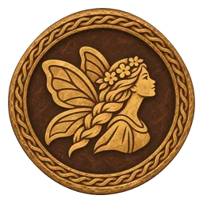
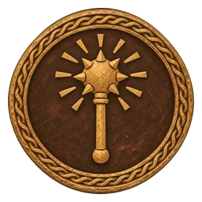
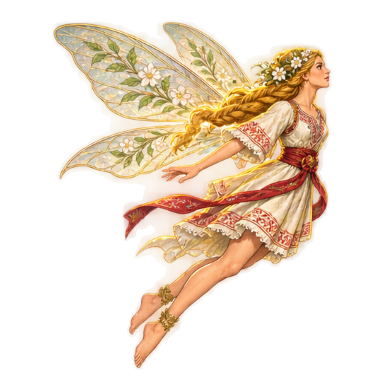

RAVIJOJLA
R · BES 0Musa Kesedžija ♥ ♥ ♥
Čitaj njegov zamah. Sačekaj otvoren gard.


„Ni po babu, ni po stričevima, već po pravdi Boga istinoga.”UROŠ I MRNJAVČEVIĆI · NARODNA PESMA
TVOJ NAČIN IGRANJA
Podešavanja
Pripovedač smanjuje primljenu štetu i produžava vreme za odbijanje. Kontrole: WASD / strelice, Space, J, K, L, E, Q, Shift. S / dole: čučanj i izbegavanje strela. Drži L za blok; početak garda odbija udarac. Gard se troši i obnavlja kad ga spustiš. R: super udarac pri 100 besa, koji puniš borbom. Esc pauzira igru.
IZ PESME U IGRU
Junak između istorije i legende
U ovoj slobodnoj epskoj priči osmanski odred zatvara klisuru i zarobljava putnike. Marko, Šarac i Ravijojla oslobađaju drum. Na kraju ih čeka Musa, odmetnuti gospodar prolaza.
Istorijski Marko Mrnjavčević bio je osmanski vazal. Igra spaja motive narodnih pesama, a nije rekonstrukcija istorijskog događaja. Musina tri srca, Šarčeva snaga i vilinska pomoć pripadaju epskom svetu.
Crveni barjaci sa belim dvoglavim orlom stilizovani su srednjovekovni motivi. Ravijojlin mali krilati lik i čarobni mostovi autorska su interpretacija.
Izvori: Marko i Musa · Marko i vila · Istorijski Marko
NIJE KRAJ PESME
Ustani, junače.
Ravijojla te vraća do poslednjeg barjaka.
MEGDAN JE ZAVRŠEN
Drum je slobodan.
Tri srca su utihnula. Marko spušta topuz.
Musa ga je oborio u koštac i ostavio ranjenog, ali pesma o megdanu već ide niz Ibar.
„Teško onom ko ne poštuje dostojnog suparnika.“
UROŠ I MRNJAVČEVIĆI
Na kome je carstvo?
Četiri tabora čekaju pred belom crkvom Samodrežom, a knjige starostavne su u tvojim rukama. Kaži, Marko: na kome je carstvo?
TRGOVAC KRAJ PUTA
Dućan
„Za junaka sve imam, Kraljeviću. Samo neka dukat zvecne.”
Dukati: 0
MARKOVO PUTOVANJE
Mapa
MARKOVA RIZNICA
Riznica
Svaki pohod na kraju uči Marka jednoj veštini. Ovde vidiš šta svaka radi, kojim tasterom se izvodi i gde se dobija.
Nizovi tastera koji rade od početka. Tasteri idu jedan za drugim, s leva na desno.
U svakom pohodu skriveno je jedno čudo, najčešće visoko: na kuli, u dimnjaku između zidova ili na daskama iznad puta. Svako čudo zauvek jača Marka.
Delovi srca: 0
Knjiga dušmana
Dukati: 0
POHOD ZAVRŠEN